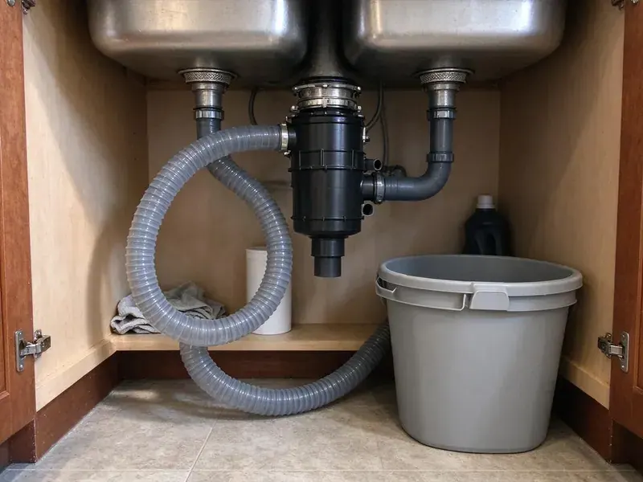

Grease Trap Cleaning in Kettering, OH
HRL Plumbing handles grease trap cleaning in Kettering, OH on a set schedule built around your fryer volume.
- Before-Open Service
- Backup Response
- Licensed, Insured Crews
- Dated Service Logs

Set up recurring trap pumping in Kettering, OH.
HRL Plumbing handles the pumping, the hauling and the service log.
Grease Trap Cleaning in Kettering, OH by HRL Plumbing
HRL Plumbing removes fats, oils, grease and food solids from traps of every size, then scrapes the walls and baffles with a long-handled scraper while the unit is empty. We also clear the inlet and outlet tees. When a trap drains slow right after pumping, a plugged outlet tee is usually the reason.
Work we handle every week:
- Baffle and tee inspection
- Licensed hauling and disposal
- Full pump-outs of traps and interceptors

Additional Kitchen Plumbing Services in Kettering, OH
Our kitchen plumbing services in Kettering, OH cover sinks, disposals, dishwashers, and grease traps so your kitchen stays clean, safe, and fully functional.


Customers
Why Choose HRL Plumbing for Grease Trap Cleaning in Kettering, OH?
Cold winters and hot, humid summers give Ohio plumbing a wide range of seasonal stress from one year to the next. Grease in a trap breaks down faster in warm weather. Odors get worse. Kitchens with fryers and a flat top going all day often tighten the interval by a week or two in summer.
- Complete Pump-Outs, We pull grease, water and the solids on the floor every time.
- Code Compliance, Most cities, Kettering included, set a pumping rule for food service kitchens, commonly based on 25 percent of depth, and inspectors check the log.
- System Longevity, Less grease in the line means fewer line jettings and a longer life for the drain pipe.
Citywide Coverage
Multi-unit restaurant groups can put every location on one account. One schedule, one invoice format. We stagger the pump-outs so each store gets a visit on its slowest morning, and the service sheets all go to one office.
Experienced Team
Licensed plumbers back up our pumping crews for anything past a cleaning, such as a new outlet tee or a replacement flow control fitting. Repairs stay in-house. Usually the plumber rides along or comes the next morning, rather than you waiting a week on another company.
Safety-First Approach
We do not sell enzyme or bacteria additives as a replacement for pumping. Many programs do not allow it. Those products break grease into smaller droplets that pass through the outlet and re-form into hard deposits farther down the sewer, which is exactly the problem the trap exists to stop.
Trusted Certified Kettering Plumbing Services Professionals
At HRL Plumbing, we are proud to offer certified plumbing services throughout Kettering, OH. Those papers on the wall mean something. Every repair, install and maintenance visit follows strict safety and quality rules, and the plumbers doing the work carry recognized industry credentials.
Call Us Now PHCC Plumbing Contractor Recognition
PHCC Plumbing Contractor Recognition Better Business Bureau (BBB) Accreditation
Better Business Bureau (BBB) Accreditation Angi Certified Pro
Angi Certified Pro ISO 9001 Quality Management Certification
ISO 9001 Quality Management CertificationWhat We Pump and Clean in Kettering, OH
Grease Trap Pumping and Hauling in Kettering
Trap waste is regulated as a liquid waste, so in most places it has to be hauled by a licensed hauler to an approved receiving facility, not dumped down a manhole or into a dumpster. We do both the pumping and the hauling. Our vacuum trucks pull the full contents of the trap into a sealed tank, and the load gets logged with gallons and destination. No barrels left behind.

Preventive Maintenance Programs in Kettering, OH
A maintenance plan is just a pumping interval plus someone who tracks it. Your manager does not have to remember it, because we track the dates. If the sludge judge shows the trap hitting 20 percent between visits, we pull the next date in, and if it reads 10 percent, we push it out and save you a pump-out. Adjustments happen at every visit.
Commercial Grease Trap Cleaning in Kettering
Restaurants and hospital kitchens in Kettering run the same basic setup, a trap or interceptor sitting between the sinks and the sewer, sized by flow rate or by gallons. The crew pumps it out and scrapes it down. We check both tees and the baffle wall for cracks or missing parts before closing it up. Intervals run anywhere from two weeks to three months.
Indoor Grease Trap Cleaning in Kettering
Indoor traps usually sit under the three-compartment sink or in a recessed pit near the dish station. Space is tight back there. We lay down mats, pump or hand-scoop the contents into sealed containers, and wipe down the floor before we leave so the kitchen can go straight back to prep. Gasket and flow control get checked too.
Large Outdoor Grease Interceptor Cleaning in Kettering
Gravity interceptors in the parking lot often hold 750 to 2,000 gallons across two or three compartments. Each compartment gets pumped separately. On big tanks we break the grease cap with a pressure wand first, since a cap that has set up hard will plug the suction hose and leave half the grease behind. No one goes inside without confined-space gear.
Under-Sink Grease Trap Maintenance in Kettering, OH
Under-sink hydromechanical traps are rated by flow, usually 10 to 50 gallons per minute, and they hold far less than people expect. Busy kitchens need them cleaned every week or two. We take the lid off, remove grease and solids, scrape the baffles, check the flow control fitting on the inlet, and replace the lid gasket if it is flattened or torn. Most odor from these units comes from a bad gasket.
Scheduled Grease Trap Maintenance Plans in Kettering
Most pretreatment programs use the 25 percent rule: pump before floating grease and settled solids together take up a quarter of the trap's liquid depth. Some cities set a fixed interval instead, often 90 days for interceptors. We work to whichever rule applies. Changes are easy.

Commercial Grease Trap Pumping in Kettering
Fryer-heavy menus load a trap fastest. Two weeks is enough for a wings place to fill a 50-gallon trap. Our trucks carry enough hose to reach traps tucked behind walk-ins or down in a basement mechanical room, and enough tank capacity for interceptors well over 1,000 gallons. Each pump-out goes to the bottom.
Grease Trap Cleaning Near Me in Kettering, OH
Being local means the same couple of techs usually see your trap visit after visit, so they notice when the grease cap is thicker than last time or a baffle has started to crack. They spot patterns quickly. The history helps us set a better interval.
Our crews pump traps in strip-center pizza shops and hotel kitchens all over Kettering. Most layouts are familiar to us. We tend to know in advance where the cleanout sits, how much hose to bring and whether the lid will need a pry bar.
HRL Plumbing at a Glance
- Licensed and insured plumbers serving Kettering, OH
- 24/7 emergency service with same-day scheduling
- Clear written estimates, no hidden fees
- 4.9-star rated by 673+ Ohio customers
Kettering Map
Kettering Information
- Population
- 56,876
- Area codes
- 937/513/419
- Service area
- Kettering and communities within 40 miles
- Nearby
- Dayton, Middletown, Springfield, Hamilton
Cooking fat goes down a kitchen drain as a liquid and sets up like candle wax once it hits a cool pipe, which is why a trap pumped on schedule protects every foot of pipe past it. Cold winters and hot, humid summers give Ohio plumbing a wide range of seasonal stress from one year to the next.
Talk to a Plumber
Call HRL Plumbing for reliable plumbing work done by licensed pros in Kettering, OH.
Our Specialized Plumbing Services in Kettering, OH
At HRL Plumbing, we handle the full list of plumbing services across Kettering, OH. From leak detection to full system installs, our team works fast and charges fair prices on homes and commercial properties alike. Take a look at our core services below:


How a Grease Trap Cleaning Visit Works in Kettering, OH
Here is how a typical pump-out goes in Kettering.
Book a Visit
Reach HRL Plumbing at (740) 449-7505 and choose an early or late slot. You get a confirmation the day before.
Measure First
Before any pumping, we take a depth reading. It shows how full the trap really is.
Pump and Clean
The truck pulls the full contents, and the crew scrapes the walls and baffles. Both tees get cleared too.
Frequently Asked Questions About Grease Trap Cleaning in Kettering
Figure $150 to $400 for an indoor trap and $300 to $1,200 for an outdoor interceptor. Regular service brings the price down. After a long gap the grease is harder to break up, so the same trap costs more than it would on a steady schedule.
Skimming off the top layer yourself is usually allowed. The disposal is the part that gets people fined. Pretreatment programs often require a licensed hauler's record for each pump-out, so a kitchen that handles its own cleaning may have no paperwork to show when the inspector asks.
Yes, every visit. The sheet shows the date, gallons and depth readings. Baffle and tee condition, the hauler and the receiving facility are on it too, which matches what most inspectors ask for.
Not if we schedule it right. Most visits happen before open or after close. For indoor traps the crew needs the dish area for 30 to 60 minutes, so we work around prep and clear out before your first cooks show up for the morning.
Everything in the trap comes out, from the floating grease cap down to the sludge of food solids on the floor. Haulers call it brown grease. It is different from the yellow grease in your used fryer oil bin, which is recycled separately and should never be poured into the trap.
Under-sink hydromechanical traps and in-ground gravity interceptors make up most of our work. Automatic grease removal units are on the list too. Those AGRUs have a heater and a skimmer wheel that pull grease into a container, and they need the container emptied and the wheel and screen cleaned on a schedule.
No, and they can make things worse. They split grease into finer droplets. Those droplets pass the outlet and recombine farther down the line, where they harden again, which is why many pretreatment programs ban additives as a substitute for pumping.
There is no parts warranty on a pump-out, since nothing gets installed. We do guarantee the work itself. Should it drain poorly after our visit, or a backup trace back to something we missed, the crew returns and makes it right.
Hear From Customers Who Hired Our Plumbing Experts

Tyler J.
We bought a taller comfort height toilet for my dad, who just had knee surgery. The plumber pulled the old one, found the flange was cracked, and replaced it before setting the new bowl. Took about two hours.
Toilet Installation · Cincinnati, OH
Rachel N.
Hard water was leaving white crust on every faucet and our dishwasher was struggling. The tech tested the water, recommended a softener sized for a family of five, and installed it with a bypass valve in one afternoon. The spots on our glasses are gone.
Water Softener · Dayton, OH
Diane F.
My kitchen faucet had dripped for months and I finally got tired of hearing it at night. HRL Plumbing came out the next morning, replaced the cartridge and the O rings, and tightened a loose base that was letting water under the sink.
Faucet Repair · Dayton, OH
Jessica T.
We were adding a gas range in a kitchen remodel and needed a new line run from the meter. The plumber pulled the permit, ran the pipe through the crawl space, and had it inspected and approved within the week.
Gas Line Repair · Springfield, OH
Brian W.
I smelled gas behind the dryer and called right away. The plumber found a corroded flex connector, replaced it, and pressure tested the whole line before turning the gas back on. He let me watch the gauge hold steady for fifteen minutes.
Gas Line Repair · Kettering, OHPaul B.
Our pit pump ran nonstop even in dry weather. The plumber found the check valve was stuck open, so the same water kept cycling back into the pit. New valve, new float switch, done in an hour. It runs quiet now.
Sump Pump · Middletown, OH